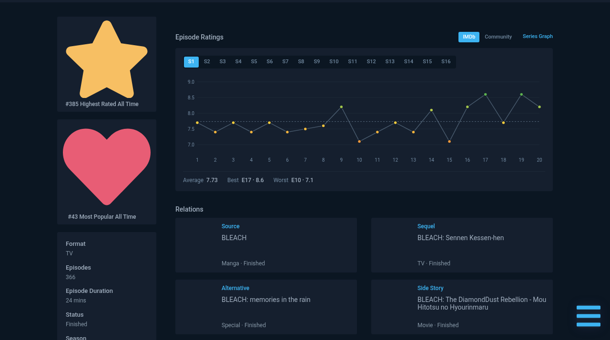

AniList tells you how good an anime is. It doesn't tell you which episodes are worth it. This adds a rating chart to every anime page, so a season's shape is obvious before you start it.

Bleach — sixteen seasons, one tap apart. The chart sits above Relations and follows your AniList theme.
Switch between IMDb ratings and Series Graph's own community scores.
Its title, score, vote count and air date.
Average, best episode and worst episode under every chart.
Light, dark and high contrast, picked up from AniList itself.
AniList splits a show into one page per cour. This works out which season each page means — correct on all 134 multi-season shows in AniList's 200 most popular.
No data, or no confident season match? Nothing appears. No empty boxes, no error banners.
Chrome loads the extension from that folder every time it starts, so it has to stay put. Documents is fine. Downloads is not.
chrome://extensions and turn on Developer mode
Paste that into the address bar. The toggle is in the top-right corner. On Edge
the address is edge://extensions and the toggle is on the left.
The button only appears once Developer mode is on. Choose the folder you
unzipped — the one with manifest.json directly inside it.
Open any anime on AniList and the chart appears at the top of the Overview column, above Relations.
.crx files that
way, and it now
blocks
those too unless they come from the Chrome Web Store — on Windows and macOS there
is no self-hosting route at all. Load unpacked is the only way to install an
extension that is not in a store, which is why every extension distributed this
way asks for the same three steps.
Download the new zip, replace the contents of the folder you loaded, then click the
refresh icon on the extension's card in chrome://extensions.
git clone https://github.com/anas1412/series-graph-for-anilist
cd series-graph-for-anilist
node scripts/package.mjsOr skip the zip and Load unpacked straight from the cloned folder. There is no build step — plain ES modules and one content script.